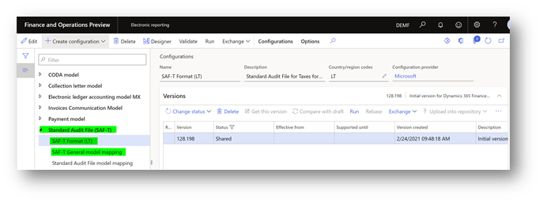
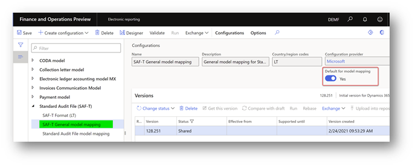
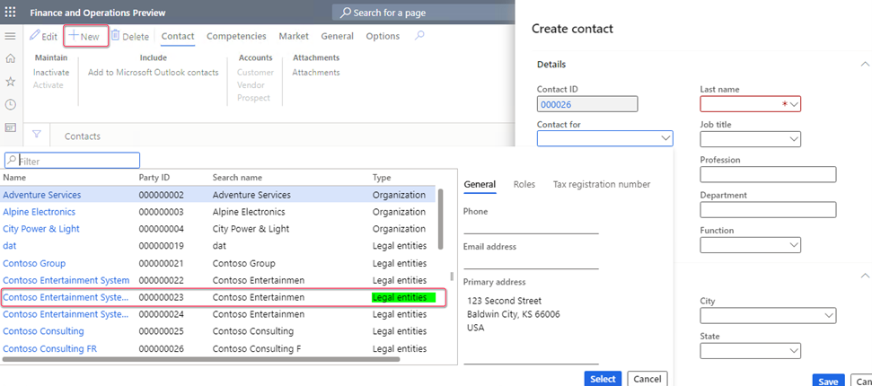

Standard Audit File for Tax (SAF-T) for Lithuania
[!include[banner](../includes/banner.md)][!include[banner](../includes/preview-banner.md)]According to Article 16 of the Law on Accounting of the Republic of Lithuania, companies in Lithuania are legally required to provide a report in Standard Audit File for Tax (SAF-T) format. This topic describes how Microsoft Dynamics 365 Finance supports the SAF-T requirements and explains how to prepare Finance to work with the SAF-T report for Lithuania.
For more information, see SAF-T - VMI.
Setup
To start to work with the Lithuania SAF-T report, complete the following steps:
- Import Electronic reporting configurations.
- Set up application-specific parameters for the SAF-T Format (LT) configuration.
- Select the SAT-T format in General ledger parameters.
- Turn on features in Feature management.
- Create a contact person for your company.
Import Electronic reporting configurations
In Finance, import the following versions or later of these Electronic reporting (ER) configurations from the Global repository.
For more information about how to download ER configurations, see Download ER configurations from the Global repository.
| ER configuration name | Type | Version | Description |
|---|---|---|---|
| Standard Audit File (SAF-T) | Model | 128 | The common data model for different audit reports. |
| SAF-T General model mapping | Model mapping | 128.251 | The model mapping that provides general data source mapping. |
| SAF-T Format (LT) | Format | 128.198 | The XML format that represents the SAF-T report in accordance with the requirements for Lithuania. |

The SAF-T General model mapping configuration provides general data source mapping for the following master data:
- GeneralLedgerAccounts – General ledger.
- Customers – Purchasers and other debtors.
- Suppliers – Suppliers and other creditors.
- TaxTable – Tax type tables that are used in the legal entity's accounting system. Examples include value-added tax (VAT), corporate income tax, and excise taxes.
- UOMTable – Table for units of measurement.
- AnalysisTypeTable – Data tables for analytical accounting. This data is used to provide details of transaction data. Examples include unit costs, additional costs, a cost center, or a project.
- MovementTypeTable – Stock movement types.
- Products – Products and services.
- PhysicalStock – Data about the stock that is contained in the file.
The SAF-T General model mapping configuration also provides general data source mapping for the following transactional data:
- GeneralLedgerEntries – General ledger entries.
- Sales invoices – Initial sales documents.
- PurchaseInvoices – Accounting documents for purchases and acquisitions.
- Payments – Payments.
- MovementOfGoods – Information about the movement of goods. For example, movement occurs when goods are recorded, when goods are written off after they are sold or used in production, and when finished products, determined loss, and defective goods are recorded.
- AssetTransactions – Economic transactions or events for tangible or intangible economic assets, and for financial assets.
Import the most recent versions of the configurations. The version description usually includes the number of the Microsoft Knowledge Base (KB) article that explains the changes that were introduced in the configuration version.
Important
After all the ER configurations from the previous table are imported, set the Default for model mapping option to Yes for the SAF-T General model mapping configuration.

Set up application-specific parameters for the SAF-T Format (LT) configuration
In Electronic reporting, open the Configurations page.
In the configuration tree, under Standard Audit File (SAF-T), select SAF-T Format (LT).
Make sure that you're working in the company that you want to set up the application-specific parameters for.
Select Configurations > Application-specific parameters, and then, on the Action Pane, select Setup.
In the list on the left, select the last version of the configuration.
Provide the mapping for all the lookup fields:
- StandardAnalysisType_LOOKUP – Define the mapping between the dimensions that are used by the company and the standard analysis types of Lithuania. Select the value APA-100 as the last condition in the list. The Analysis ID column must be set to *Not blank*. In the Line column, verify that APA-100 is the last condition in the table. At least one line that has *Not blank* values must be set up.
- ReportTaxCodes_LOOKUP – Define the mapping between the sales tax codes that are used by the company and the standard tax codes of Lithuania. Select the value PVM100 as the last condition in the list. The Tax Code column must be set to *Not blank*. In the Line column, verify that PVM100 is the last condition in the table. At least one line that has *Not blank* values must be set up.
- AddressType_LOOKUP – Define the mapping between the address types that are used by the company and the address types that are used in the SAF-T report for Lithuania. Select the value KT as the last condition in the list. The Purpose Name column must be set to *Not blank*. In the Line column, verify that KT is the last condition in the table. At least one line that has *Not blank* values must be set up.
- StandardMainAccount_Lookup – Define the mapping between the main accounts that are used by the company and the standard main accounts of Lithuania. Select the value 7 as the last condition in the list. The Analysis ID column must be set to *Not blank*. In the Line column, verify that 7 is the last condition in the table. At least one line that has *Not blank* values must be set up.
When you've finished setting up the lookup fields, in the State field, select Completed. Then save the configuration.
Select the SAT-T format in General ledger parameters
- Go to General ledger > Setup > General ledger parameters.
- On the Standard Audit File for Tax FastTab, in the Standard Audit File for Tax (SAF-T) field, set up the SAF-T format.
Turn on features in Feature management
Go to Feature management, and select the All tab.
In the feature list, find and select the following features:
- Optimization of query data source creation time during execution of ER reports
- Optimize datasets memory consumption at ER reports runtime
Select Enable now.
Create a contact person for your company
The Company node of the SAF-T report must include information for a contact. This node is located under the Header node. To set up contact information that will be reported to SAF-T, follow these steps.
- Go to Sales and marketing > Relationships > Contacts > All contacts.
- Select New to create a new contact for your legal entity. Be sure to select Legal entity in the Contact for field.
- Check by Party ID value to make sure that you select the legal entity that SAF-T will be reported from.

Generate the SAF-T report
- To generate the SAF-T report, go to General ledger > Inquiries and reports > Standard Audit File for Tax (SAF-T) > Standard Audit File for Tax (SAF-T).
The following table describes the fields in the report dialog box.
| Field name | Description |
|---|---|
| SAF-T File type | The SAF-T supports the following file types:
|
| Reporting period from and Reporting period to | Define the start and end dates of the period that the SAF-T is requested for. The start date is reflected in the Header > SelectionCriteria > SelectionStartDate node of the SAF-T, and the end date is reflected in the Header > SelectionCriteria > SelectionEndDate node. |
| From date and To date | Specify the start and end dates of the period that the report should include data for. The start date is reflected in the Header > SelectionCriteria > PeriodStart node of the SAF-T. The end date is reflected in the Header > SelectionCriteria > PeriodEnd node. The period for one file or one part of a file can't be shorter than one month and longer than a reporting period. |
| Number of parts | Specify the number of parts to generate the SAF-T in. This value is reflected in the Header > NumberOfParts node of the SAF-T. |
| Part number | Specify the number of the part to generate in the current SAF-T. This value is reflected in the Header > PartNumber node of the SAF-T. |
| Print zero balance | This check box affects the data that is reported in the MasterFiles > GeneralLedgerAccounts node of the SAF-T. Select this check box to include all the main accounts of your company, even main accounts that have a zero balance during the specified period. Clear the check box to include only main accounts that have a non-zero balance or transactions during the specified period. |
| Export all Customers | This check box affects the data that is reported in the MasterFiles > Customers node of the SAF-T. Select this check box to include all the customers of your company, even customers that have a zero balance during the specified period. Clear the check box to include only customers that have a non-zero balance or transactions during the specified period. |
| Export all Suppliers | This check box affects the data that is reported in the MasterFiles > Suppliers node of the SAF-T. Select this check box to include all the suppliers of your company, even suppliers that have a zero balance during the specified period. Clear the check box to include only suppliers that have a non-zero balance or transactions during the specified period. |
| Export all Analysis types | This check box affects the data that is reported in the MasterFiles > AnalysisTypeTable node of the SAF-T. Select this check box to include all the dimensions of your company. Clear the check box to include only dimensions that are used in transactions that are reported during the specified period. |
| Export all Products | This check box affects the data that is reported in the MasterFiles > Products node of the SAF-T. Select this check box to include all the products of your company, even products that have zero physical stock during the specified period. Clear the check box to include only products that have non-zero physical stock or transactions during the specified period. |
| Export all Sales tax codes | This check box affects the data that is reported in the MasterFiles > TaxTable node of the SAF-T. Select this check box to include all the sales tax codes of your company. Clear the check box to include only sales tax codes that are used in transactions that are reported during the specified period. |
SAF-T content
According to the SAFT-T technical documentation, different types of SAF-T include different content, as shown in the following table.
| SAF-T file part | Group of elements | F | GL | MG | SI | PI | PA | AS |
|---|---|---|---|---|---|---|---|---|
| Header | ||||||||
| Header | X | X | X | X | X | X | X | |
| Master files | ||||||||
| GeneralLedgerAccounts | X | X | ||||||
| Customers | X | X | X | X | X | X | ||
| Suppliers | X | X | X | X | X | X | X | |
| TaxTable | X | X | X | X | X | |||
| UOMTable | X | X | X | X | ||||
| AnalysisTypeTable | X | X | X | X | X | |||
| MovementTypeTable | X | X | ||||||
| Products | X | X | X | X | ||||
| PhysicalStock | X | X | X | X | ||||
| Assets | X | X | ||||||
| General ledger entries | ||||||||
| GeneralLedgerEntries | X | X | ||||||
| Source documents | ||||||||
| Sales invoices | X | X | ||||||
| PurchaseInvoices | X | X | ||||||
| Payments | X | X | ||||||
| MovementOfGoods | X | X | ||||||
| AssetTransactions | X | X |